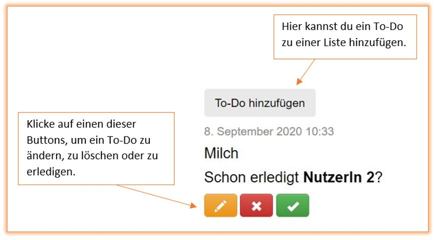
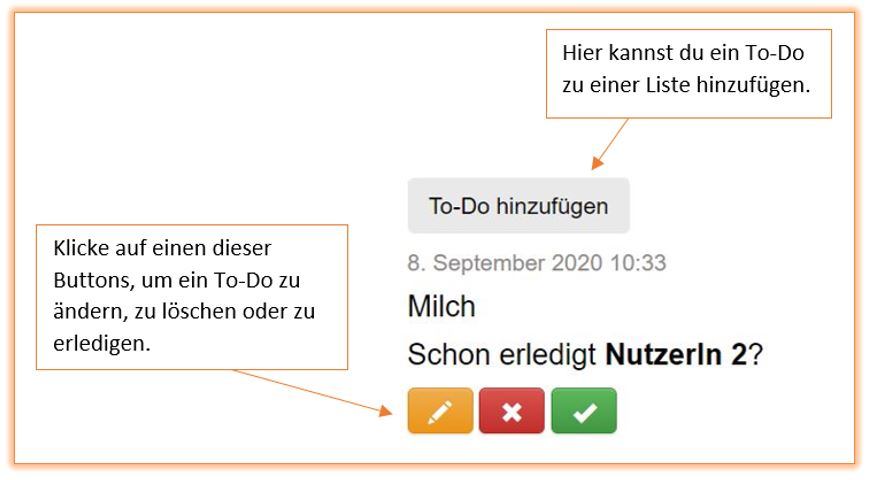

Als erstes muss eine neue To-Do Liste erstellt werden.
Danach gelangst du durch klicken auf den To-Do Listen Namen zur Bearbeitung bzw. zum Löschen der To-Do Liste.
Wenn du auf deine erstellten To-Do's zugreifen möchtest oder To-Do's erstellen/bearbeiten/löschen/abhaken möchtest, musst du auf To-Do's klicken.
Unter deinen erstellen To-Do's wird dir angezeigt, wieviele und welche To-Do's vorliegen und welche schon erledigt wurden.
Zum Abmelden reicht ein Klick auf den "Abmelden"-Button oben rechts.
{% endblock %}